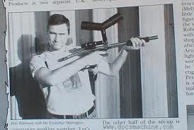

Reglas del Paintball

NORMAS DE PAINTBALL DE SEGURIDAD
Las reglas comunes de seguridad son:
- No bajarse o quitarse nunca la máscara.
- No disparar a menos de 6 metros.
- No se puede jugar al Paintball para adultos si se es menor de 14 años (Real Decreto 137/1993).
- No quitar el seguro hasta que estemos dentro el escenario de Paintball.
- No se debe quitar el chupete hasta que no salimos de la zona de seguridad.
- Mantener la marcadora (el arma) apuntando al suelo hasta que empiece la partida.
- No disparar a un contrincante que levanta la mano.
- No disparar más cuando el monitor pita el final de la partida.

En 1984, se inauguró el primer campo de Paintball cerrado. A partir de este momento, la industria del Paintball comenzó a buscar las mejores formas de crear un deporte seguro y apto para todos los públicos.
Sin embargo el Paintball de esa época distaba mucho del que jugamos actualmente: las marcadoras, que tenían que ser amartilladas en cada disparo, tenían un máximo de 12 tiros; las máscaras aún no se habían inventado, y utilizaban únicamente gafas. En 1983 comienza la competencia entre distintas compañías, y es el momento en el que el paintball desarrolla su mayor evolución, creándose en 1988 la IPPA (Internacional Association of Paintball Players).